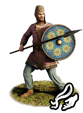
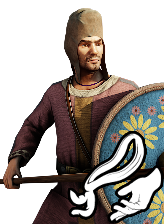

RTR: Imperium Surrectum
RTR: Imperium SurrectumPaphlagonian Levy Spearmen


Class: spearmen · Category: infantry · Men per unit: 60
Description
Strong, reliable, but lightly armoured, these brave warriors are the Paphlagonians’ first line of defence. They are able to hold the line for a while against heavier units, and may even rout them if properly supported. Indeed, they are much more durable than the other Paphlagonian units, which is mostly due to them being able to sustain casualties and endure hardship without immediately running for their lives. One must be aware that their lands have not been independent by sheer luck alone. The Paphlagonians’ arms and diplomatic sagacity allowed them to remain so, despite being surrounded by some of the strongest powers in the ancient world. As is common in their region, these men wear woven helmets and Phrygian caps on their heads and wield a short spear for close combat. Their small shields, beautifully decorated with elaborate motifs, as well as their good morale, will help them to survive against their enemies. Indeed, as Herodotus tells us: "The Paphlagonians in the army had woven helmets on their heads, and small shields and short spears, and also javelins and daggers; they wore their native shoes that reach midway to the knee" (Hdt. VII, 72).
Historical background
Paphlagonia, a rugged mountainous country situated between Bithynia and Pontus, is home to hardy hillmen capable of defending their independence with the resilience and strength that only a Paphlagonian can have. Throughout its history, the region came under the influence, and sometimes control, of various empires, including Lydia, Persia, and eventually that of Alexander the Great in 333 BC. It was after Alexander's death that the region enjoyed a measure of independence, before gradually being absorbed by the encroaching Pontic Kingdom in the 3rd and 2nd centuries BC. Following the wars between Pontus and Rome, and the defeat of Mithradates VI by Pompey in 65 BC, parts of Paphlagonia were then incorporated into the Roman provinces of Bithynia and Galatia.
The Paphlagonians were well-known for their military contributions, particularly as light infantry. While specific historical records about the Paphlagonians are scarce, they were still a menace in the region and show their presence throughout the histories. They were one of the most ancient nations of Anatolia and were already listed among the allies of the Trojans in the Trojan War (ca. 1200 BC or 1250 BC), in which their king Pylaemenes and his son Harpalion perished (Iliad, ii. 851–857). In Xenophon's Hellenika (4.1.13), King Otys of Paphlagonia supports Agesilaos with a thousand horsemen and two thousand peltasts. Xenophon also speaks of them as being governed by a prince of their own, without any reference to the neighbouring satraps, a freedom perhaps thanks to the nature of their country, with its lofty mountain ranges and difficult passes.
As outlined by Manolis Manoledakis (Politics and Diplomacy in Paphlagonia [2017]), the Paphlagonians remained politically autonomous well into the Hellenistic period, often negotiating their freedom between the Seleucids, Pontic rulers, and invading Galatians by offering military support and regional knowledge. While their leaders occasionally posed as kings or dynasts, most Paphlagonian communities retained a fiercely independent and martial identity. Occasionally local leaders would be able to form a unified tribal kingdom, but rarely one that endured. The invasion and conquest of Anatolia by Alexander the Great gave the natives the chance of governing themselves, as Alexander was content to accept nominal submission from them without tribute being exacted. However, the dominant view is that the authority of those rulers was regional rather than national, and thus none of them (e.g. Corylas, Otys) ruled over all Paphlagonians. Within this frame, it has been claimed that ‘Paphlagonia must have been split among several rival chieftains’ or that ‘the Paphlagonians were rather acting as a loose federation of tribal groups’ (Manoledakis, 2017).
As most people in this part of the world, their destinies eventually intertwined with that of Rome, and they are mentioned by Festus, who wrote a compendium of Roman history in around 370 A.D., during the reign of the emperor Valens. Festus (Brev. 11) writes that the “King Pylaemenes, a friend of the Roman people, controlled Paphlagonia. Having often been driven thence from his kingdom, he was restored by us and, with his death, the legal status of a province was imposed on Paphlagonia”. King Pylaimenes probably lived during the time of the early empire, and it was after his death that Rome fully assimilated Paphlagonia.
Stats
| Rank in roster | Rank in roster | Rank in roster | Rank in roster | ||||||||
|---|---|---|---|---|---|---|---|---|---|---|---|
| Men per unit | 60 | █████████· 88% | Attack | 5 | █········· 0% | Charge bonus | 3 | ██········ 16% | Defence | 26 | ███······· 33% |
| · armour | 2 | █········· 13% | · defence skill | 22 | ██████···· 60% | · shield | 2 | ███······· 26% | Morale | 7 | █········· 11% |
| Discipline | Impetuous (may charge without orders) | Training | Untrained | Recruitment cost | 1,486 dn | ██········ 16% | Upkeep per turn | 544 dn | ███······· 25% | ||
| Turns to recruit | 2 |
Weapons
| Primary | Secondary | Primary | Secondary | Primary | Secondary | Primary | Secondary | ||||
|---|---|---|---|---|---|---|---|---|---|---|---|
| Attack | 5 | — | Charge bonus | 3 | — | Type | melee · blade | — | Damage | piercing | — |
| Properties | Light spear (braced against cavalry charges from the front) · +8 attack against cavalry | — |
Defence
| Primary | Secondary | Primary | Secondary | Primary | Secondary | Primary | Secondary | ||||
|---|---|---|---|---|---|---|---|---|---|---|---|
| Total | 26 | — | Armour | 2 | — | Defence skill | 22 | — | Shield | 2 | — |
Condition and terrain
| Hit points | 1 | Ground: scrub / sand / forest / snow | -2 / 0 / -4 / 0 | Charge distance | 30 | Formations | Square |
Technical stats
| Time between blows (primary / secondary) | 2.5 s / — | Extra fatigue in hot climates | 0 | Collision mass per man (1.0 is normal) | 0.84 | Spacing between men: close / loose | 1 × 1.2 m / 2 × 2.4 m |
| Default ranks | 5 |
In battle: Very good stamina
Who can recruit it
A core roster unit for one faction, which can raise it anywhere it holds the right building:
Any faction holding one of the provinces below can field it.
Exactly what a settlement must have, route by route (4)
| Building | Also requires | Building | Also requires | Building | Also requires | Building | Also requires |
|---|---|---|---|---|---|---|---|
| Any settlement | Garrison Building or Tier 1 Military Industrial Complex · Paphlagonian area of recruitment · Any Government (Dependency, Indirect Rule or Direct Rule) · Tier 2 Colony not built | Indirect Rule | Garrison Building or Tier 1 Military Industrial Complex · Tier 1 Colony | Direct Rule | Garrison Building or Tier 1 Military Industrial Complex · Tier 1 Colony | Homeland | Garrison Building or Tier 1 Military Industrial Complex |
Areas of recruitment

| Zone | Provinces | ||||||
|---|---|---|---|---|---|---|---|
| Paphlagonian | 4 |